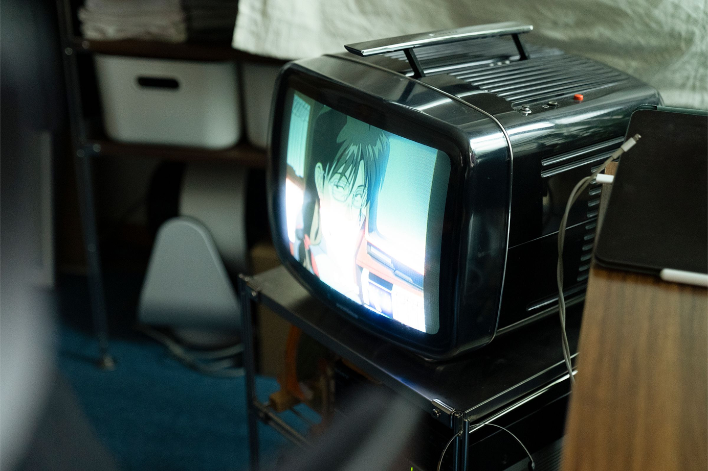

*전시작품의 일부입니다.

:짧지만 강렬한 우리의 여름
이번 개인전 [BLUE VACATION
: 짧지만 강렬한 우리의 여름]은
누구에게나 한 번쯤 스쳐갔을,
그러나 쉽게 잊히지 않는 여름의
한 장면들을 담아낸 전시입니다.
짧지만 선명하게 마음속에 남은
여름의 기억을 파란 색감과 감정의
결로 표현해 보고자 했습니다.
일상 속 잠시의 휴식처럼 이 전시가
여러분의 마음에 작은 파동을
남길 수 있기를 바랍니다.
*전시작품의 일부입니다.

A. 현재 한국과 일본에서 주로 활동하고 있는 나무13입니다. 작가명을 본명으로 아시는 분들도 계세요. 나무13은 사실 게임 아이디에서 시작된 이름입니다. 양파나 감자 등 많은 구황작물로 이뤄진 닉네임들 사이에서, 제일 어감이 좋았던 ‘나무’에 제 생일 날짜인 13일을 합친 이름이에요. 구황작물들과는 다르게 레트로 스타일을 차용한 아트워크를 통해 독자적인 작품관을 전개해나가고 있습니다. 단순히 레트로의 느낌뿐만 아니라, 후에 나무13 스타일이라고 불릴 수 있을 만한 그림을 그리기 위해 노력하고 있습니다.

A. 처음부터 일러스트레이터가 되려고 한 것은 아니었어요. 그래픽 디자인 전공이어서 처음에는 디자이너를 목표로 했어요. 어영부영 군대에서 제대한 후 가방 몇 개 달랑 들고 서울로 무작정 올라와서, 디자인 회사에 취업하겠다는 막연한 목표로 몇 개월간 누나의 월셋집에 얹혀살았어요. 알바를 전전하며 디자인 포트폴리오를 만드는 것이 전부였고, 그러다 보니 제 한계가 다가오는 것 같았어요. 툴의 숙련도부터 이렇다 할 만큼 멋진 결과물도 없었어요. 그렇게 방황하고 있을 즈음에, TV를 보다가 우연히 트리거에서 제작한 ‘킬라킬’이라는 애니메이션을 보게 되었습니다. 그런데 중간중간 커다란 볼드체의 타이포가 멋들어지게 등장하는 연출이 굉장히 신박했고, ‘단순한 요소로도 멋진 그림이 될 수 있구나’ 하는 생각에 정말 큰 충격을 받았습니다.
저는 미술을 전공했고, 비록 미대는 못 갔었지만 그림에는 제법 자신이 있었어요. 또 제가 가장 좋아하는 취미가 그림그리기였기 때문에 취업과 미래에 대한 막막함과 스트레스를 그림으로 풀어보려 하였고, 잡지나 다양한 시각 매체들을 접하며 어떤 식으로 접근하면 더욱 멋지게 표현해낼 수 있을까에 대해 많이 고민했어요. 조금이라도 더 맘에 드는 그림을 그리며 성취감을 얻어보고자 했었던 욕망이었던 것 같습니다. 그렇게 완성한 작업들을 SNS에 하나둘씩 올리다 보니, 예상 밖의 관심을 받게 되었고, 소니 엔터테이먼트에서 클라이언트 워크를 처음으로 받으면서 자연스럽게 일러스트레이터로 발돋움하게 되었습니다.
A. 사실 어떤 작업이든 쉬운 것은 단 하나도 없습니다. 클라이언트 워크는 주제를 던져주지만, 그것을 서로의 니즈에 맞게 표현한다는 것이 너무도 어려운 일이라, 이로 인한 갈등도 자주 생기는 편이에요.
개인작의 주제 선정기준은 매년, 매월 달라져 왔지만, 요즘에는 먹을 것에서 강한 영감을 얻는 것 같아요. 원래는 물욕이나 여행 중 뜻밖의 만남에서 영감을 받아왔지만, 물욕은 제가 해탈을 한 것인지 달리 갖고 싶은 게 생기지 않아 벽과 마주친 상태이고, 여행은 요즘 바빠져서 시간이 없다보니 아무래도 현실적으로 어려워서 결국 먹을 것으로 귀결된 것 같아요. (웃음) 그래도 늘 같은 주제로 그릴 수도 없으니, 매일매일 고심하고 있습니다. 최근 SNS에 지금의 내 감정을 시처럼 풀어서 표현해보았는데, 누군가가 이에 공감하여주었던 경험이 새롭게 다가왔어요. 그래서 사람의 원초적인 감정에 대해서도 조금씩 그려보고자 노력하고 있어요. 마음이 불안정할 때 이보다 효과적인 위안은 없는 것 같습니다.
A. 옛날부터 꾸준히 저에게 영감을 주는 것들은 항상 애니메이션과 만화들이었어요. 물론 ‘H2’나 ‘터치와’ 같은 890년대의 만화들이 대부분이지만, 최근 ‘SSSS 다이나제논’이라는 애니메이션에서도 큰 영감을 받았었습니다. 인물과 인물 간의 사소한 감정들에 있어서, 대사 하나하나부터 정말로 사람을 관찰하고, 현실적인 대화 구조로 연기되는 그 애니메이션의 모든 요소가 저에게 큰 센세이션으로 다가왔어요. 또 제작하는 부분에 있어서 스태프들이 얼마나 작품에 진심이었는지를 알 수 있는 사소한 디테일들이 이상하게도 위로를 주었어요. 아무튼 항상 이상한 이유로 영감을 받아와서 조금 설명하기가 난해하긴 하지만, 이러한 영감들을 제 작품에 어떻게 녹여낼 수 있을까 하고 한참을 고민하고는 합니다. 항상 많이 돌아보고 다시 보고 또 다른 영감을 얻어가며 제 스타일로 풀어내면서, 조금씩 나만의 테크닉이 될 수 있도록 노력하고 있어요. 보통은 눈치채기 힘든 부분이 많습니다. (웃음)
A. 그림의 주제전달을 우선적으로 생각합니다. 제가 어떠한 개체를 본 작품의 메인으로 결정하고 전달하기 위해서 어떤 부가적인 요소가 필요할지 생각하고, 메인 개체를 전면에 내세운 뒤 이를 살리기 위해 서브 개체들을 이리저리 배치하며 가장 예쁘게 나올 수 있는 구도를 만드는 과정을 거쳐요. 이러한 작업을 하면서도 타이포 작업에 심혈을 기울이는 편이에요. 전체 그림에서 부족한 부분이 어딘지 보여서, 시선의 분산과 그림의 전체적인 밸런스를 조정하며 밀도감에도 영향을 주는 등 다양한 포인트를 구성할 때 타이포그래픽을 함께 구성하고 있어요.
A. 아무래도 좋아하는 게 빈티지 제품들이다 보니 자연스럽게 그림에 녹아든 것 같아요. 요즘 나오는 제품들을 싫어한다기보다는, 옛 물건들에 담긴 헤리티지와 지금까지 물건을 가졌던 소유주들의 삶의 흔적을 살펴보는 것을 너무 좋아하기 때문에 제 안에서 우선순위가 됐어요. 여기저기 남아있는 세월의 흔적들에서 어떠한 시간을 지나왔는지 유추해볼 수 있어요. 지나칠 정도로 깨끗한 물건도, 애지중지 사용했지만 세월의 흔적이 주요 기능을 하는 부분들에만 어쩔 수 없이 남아있는 물건도 여러 가지 상상을 하게 해줍니다.
또, 빈티지 오브제들은 단순한 대량생산 물건과는 다르게 핸드메이드인 제품들도 제법 있고, 신기한 금형을 이용해 만들어 낸 제품이나 요즘엔 절대 나오지 않을 법한 색감의 제품들도 저의 시각적인 호기심을 크게 자극하는 포인트 중 하나에요. 어찌 보면 개미지옥에 발을 들인 것처럼 제 아트워크에서 빼먹을 수 없는 요소가 되어 버린 게 아닌가 싶습니다.
A. 클라이언트 워크의 경우엔 원하는 레퍼런스와 콘셉트에 대해 먼저 설명을 요청해요. 그 뒤 짧은 회의를 통해 픽스하고, 개인작과 같은 프로세스를 통해 진행합니다. 그 후로 시안의 역할을 하는 러프스케치를 적게는 1개에서 3개 정도 그려보고, 선을 따고 채색을 해요. 이 과정까지는 아이패드의 ‘프로크리에이트’라는 앱으로 진행하는데, 짧게는 3시간에서, 길게는 3~4일까지 걸릴 때도 있어요. 이런 과정 이후에 PC로 파일을 옮겨서 포토샵을 이용해 색감 조절과 타이포 작업을 진행하는데, 그림을 그리는 것보다 더 오래 걸리는 경우가 태반이에요. 타이틀을 정해두고 볼드체부터 세미, 잡지 표지 형태의 폰트들 또는 자막 형식 등 다양한 경우의 수를 생각하다 보니 후반 작업 시간이 전체적인 시간을 좌지우지하는 것 같아요.
A. 빔즈 재팬과 함께하게 된 계기는, ‘menmeiz’라는 프로젝트를 진행하려 하는 분에게서 온 DM이었습니다. 귀여운 소녀 콘셉트로 한 하이틴 프로젝트였는데, 작가 10명 정도가 모여서 진행하는 팝업스토어 형식이었어요. 이 팝업스토어의 설치를 위해 직접 빔스 재팬으로 갔었는데, 그때 만났던 작가님들이 저를 보고는, 남자였냐며 놀라시던 기억이 나요. 작품 생활 초창기엔 핑크색 색감과 두루뭉술한 그림체, 여성 캐릭터와 여성스러운 오브제 때문에 이런 오해가 많은 편이었어요. 국내에서 셀애니메이션을 접하시는 분들 중에 ‘세일러문’ 등으로 접하시는 분들이 많다 보니, 아트워크로 저를 알게 된 국내 팬분들은 팬레터에 언니라고 적어서 보내주시기도 했어요. 지금은 여러 매체에 노출되고 개인전을 진행하면서 그런 오해는 많이 잦아든 편입니다. (웃음)
A. 남자 캐릭터를 차별하는 건 아니에요. 재밌고 멋있는 것들이나 부리부리한 요소를 그리는 또한 좋아해요. 다만 성별에 따른 장단점이 분명하기 때문에 더 색감을 다채롭게 활용할 수 있는 여성 캐릭터를 자주 그리는 편이에요. 옷도 옷이고 콘텐츠도 훨씬 많아요. 베리에이션할 것이 많더라고요. 표현하고 싶은 건 치마의 쉐잎인 경우가 많은데, 그 경우엔 어쩔 수 없이 여자 캐릭터가 많고 기본적으로 여자 캐릭터의 선이 곡선이 많다 보니까 스케치하는 부분이나 색감을 다채롭게 사용하는 요소 등이 재밌어요.
A. 메종키츠네와 함께했던 그림이 기억에 남아요. 클라이언트 워크로 들어온 작업은 아니었어요. 메종키츠네의 프랑스 CEO 질다스 씨가 저를 팔로우하고 있었는데, 일본에서 매니지먼트를 해주는 고계신 형과 얘기를 하다가, 혹시 협업을 해볼 기회가 되지 않겠냐며 한번 얘기나 해보자는 말이 나왔어요. 그렇게 반신반의하며 질다스 씨에게 DM을 보냈고 흔쾌히 메종키츠네의 로고를 사용해도 된다는 허락을 해주어서, 개인작이자 클라이언트 워크인 작품이 탄생하게 되었습니다.
질다스 씨가 직접 인스타그램에 홍보를 돌려주셔서 개인적으로 감사한 마음이 가득한 작품입니다. 또 주변 사람들도 이걸 보고 저한테 연락이 많이 왔었기 때문에, 여러모로 즐거운 경험이었습니다.
A. 요즘에 ‘동물의 숲’, ‘포켓몬’과 같은 콘솔게임이 많이 나오잖아요. 그런 것을 보면서 단순히 작품으로서의 작업물보다는, 어떠한 게임이나 애니메이션의 키 비주얼 작업을 한번 해보고 싶다는 생각이 들었어요. 내가 만든 캐릭터를 전 세계 사람들이 직접 체험하며 느낀다는 건 정말 멋진 일이라고 생각해요. 작은 게임이라도 좋으니까 키 비주얼 작업을 하고 싶은 마음이 제일 커요. 아직 시간은 많이 있다고 생각해서, 언젠가를 기대하며 천천히 실력을 쌓아보고자 합니다. 그거 외에는 맥주 광고도 한번 해보고 싶어요. 제가 맥주를 너무 좋아해서. (웃음)
A. 즐거운 그림 같은 거죠. 제 작품은 현대미술처럼 심오하지도 않고, 미사여구를 붙일 만큼 깊이가 있는 그림을 그리는 게 아니라, 한눈에 봤을 때 ‘예쁘다’, ‘눈이 즐겁다’라고 느낄 수 있는 일차원적인 그림을 그리고 있다고 생각해요. 그렇다고 해서 완전히 일회성에 가까운 그림을 지향하는 것은 아닙니다. 제 그림을 본 누군가의 기억에 오래오래 남고, 또 이를 보고 새로운 지향점을 찾을 수 있는 이정표 같은 그림이 되기를 바라기도 해요. 결국 누군가의 안에 오래 남기 위해선, 즐거운 기억으로 남아야 한다고 생각하니까요.
A. 처음엔 디자인도, 그림도, 무엇하나 제대로 해내질 못해서 아무도 믿어주질 않았습니다. 그냥 열심히 취업 준비나 하라는 소리만 들었고, 솔직히 말해서 정말 막막해서 서울에 발붙이고 있는 것조차 죄를 짓는 것 같은 기분이었어요. 지금은 어느 정도 기반을 다지고 한국뿐만 아니라 해외에서도 성과를 인정받기 시작하면서 자신감이 생겼기 때문에, 어떤 사람을 보더라도 자신 있게 마주할 수 있게 되었습니다. 물론 대인관계에서의 자신감이지, 거만해지거나 겸손을 잃는 일은 있어서는 안 된다고 생각해요.
무언가 하나에 진심으로 파고들고, 좋아하는 것을 잘하는 것으로 만들어 내면 어떻게든 살아갈 방도가 생기는구나, 그림을 트라우마의 돌파구로써 그리던 사람이 이를 통해 어른 한 사람의 몫을 할 수 있게 되었구나 하는 사실이 지금도 믿기진 않아요.
A. 자신의 일을 좋아하면서, 발전하기 위해 끊임없이 노력하는 태도. 어느 직업에서나 통용되는 것 같아요. 일러스트레이터는 어느 회사에 소속되는 경우나, 지명도가 높은 프리랜서인 경우가 아니면 입에 풀칠조차 하기가 어려운 것이 사실이에요. 처음 발을 딛는 순간부터 입지를 쌓는 순간까지는 깨어있는 모든 순간 만감이 교차하며, 고민 속에서 하루하루를 사는 경우가 대부분일 것이고 저 또한 그랬습니다. 이 과정을 버틸 수 있었던 것은 결국 그림에 대한 순수한 열망이었어요. 내 그림을 통해서 좀 더 세상과 교감할 수 있겠구나 하는 확신이 작게나마 제 마음속에 있었기 때문에, 야간 아르바이트를 하면서도 새벽 내내 그림을 그리는 힘을 얻을 수 있었고, 습작을 마구잡이로 만들어내기보다는 진짜로 내가 만족할 수 있는 완성작을 남겨보자, 완벽하진 않더라도 완성된 하나의 작품을 만들어 보자는 집념으로 달라붙었어요. 순수하게 뭔가를 좋아할 수 있고 또 집중할 수 있으며, 발전시킬 수 있다는 건 정말 멋진 일이에요. 만약 그림을 그리는 중에도 이를 확신하지 못한다면, 저는 진지하게 일러스트레이터가 되는 것을 말리고 싶어요.
제가 생각하는 일러스트레이터씬은 자신의 그림에 대해서 얼마나 진심을 담는지에 대한 싸움이라고 생각해요. 좋아하는 것이 결과물이 아니라 이를 통해 돌아오는 부가적인 것들이라면, 이 일을 업으로 오래하기가 쉽지 않을 거예요. 저는 좋아하는 일을 즐기며, 집중하고, 수행하며, 발전시키다 보면 나머지 것들은 자연스럽게 따라오는 것이라고 생각해요. 형식적으로 무책임하게 뱉는 말이 아니라, 정말로 그 과정을 따라온 저이기에 진심을 담아 해드리고 싶은 말이에요. 물론 그때가 언제가 될지는 사람에 따라 다를 것이라고 생각합니다. 누군가는 몇 년이 걸려서, 또 다른 누군가는 몇 달도 채 걸리지 않아서 이뤄낼지도 모르지만, 서두르지 않고 착실히 쌓아가는 사람을 배신할 만큼 세상은 혹독하지 않다고 믿습니다.
마지막으로, 일러스트레이터를 꿈꾸는 이들에게 제가 늘 말해드리곤 해요.
좋아하는 일을 한 끝에 내가 살아있었다는 흔적이 남을 수 있다면, 그게 큰돈이 아니라 내 덕분에 정말로 행복했다고 말해줄 수 있는 사람들이기를 바란다고. 나로 인해 변화할 수 있는 사람을 남길 수 있는 것이야말로 정말 멋진 일이라고.